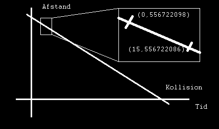

Videnskabens Hus
|
Bator-år efter måling 1 |
Afstand ml. Ulan og Bator i km |
| 0 | 556722098 |
| 5 | 556722094 |
| 10 | 556722090 |
| 15 | 556722086 |

ADVARSEL ADVARSEL ADVARSEL
!STRENGT FORTROLIGT!
Videre adgang kræver godkendelse niveau Q.